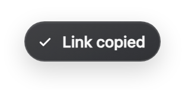
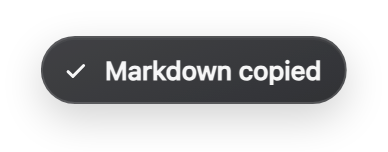
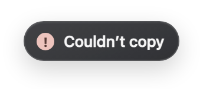

Choose your confirmation.
Get clear feedback when copying fails.

A small confirmation that
your link is on the clipboard.

The page title and link,
ready to paste into your notes.
The same soft finish,
with a smaller footprint.

When copying fails,
you know what happened.